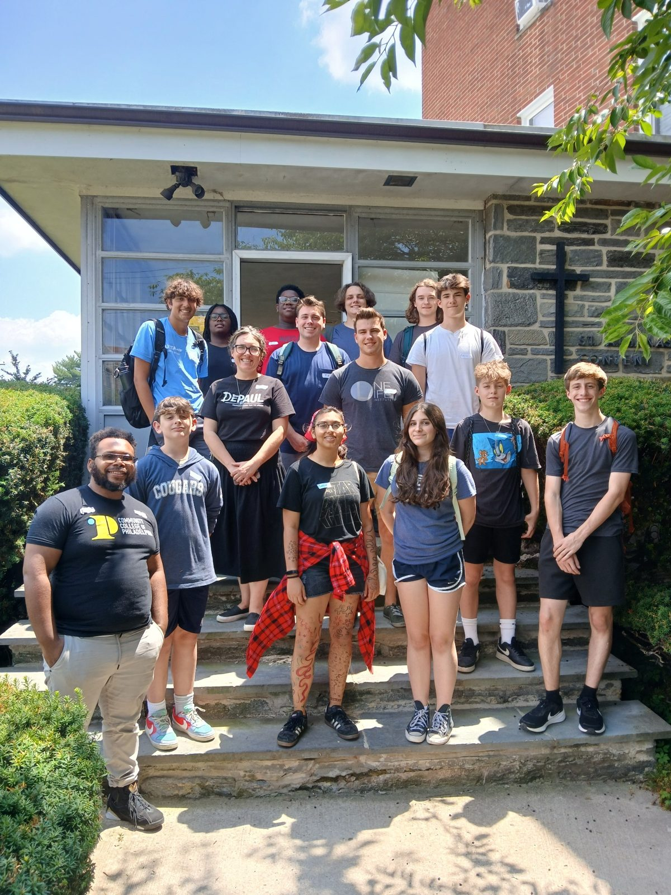

Practitioner
George works directly with people navigating real academic, professional, personal, spiritual, and organizational challenges.
ABOUT GEORGE WALLEY-SEPHES
George is a practitioner, educator, minister, coach, program developer, speaker, and emerging scholar whose work centers on human and organizational transformation.
George works directly with people navigating real academic, professional, personal, spiritual, and organizational challenges.
His work includes student success, coaching, mentoring, workshops, career and transfer support, youth development, and practical skill-building.
Christian faith shapes George's understanding of identity, purpose, truth, relationships, and what meaningful transformation ultimately requires.
George continues to study individual and organizational transformation, spiritual development, authenticity, vulnerability, purpose, culture, and human development.

THE THREAD THROUGH THE WORK
Why do some people remain stuck despite working incredibly hard? Why do some organizations produce outcomes without producing meaningful growth? What helps a person move from managing life to transforming it?
Survival to Success brings those questions together into one body of work that applies transformation to individuals, organizations, and communities.